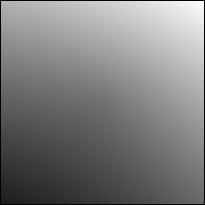
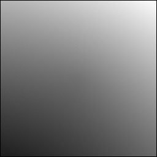
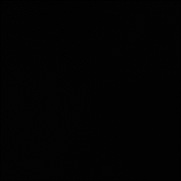
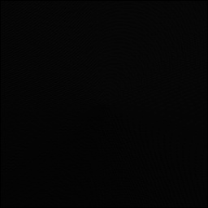
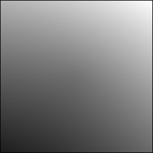

Image Filter Showcase
Each filter applied to the same 256x256 reference gradient via jpeg_edu filter.
All filters operate on grayscale internally (luminance conversion from RGB).

Reference (Original)
256x256 RGB gradient image before any filtering.
Used as input for all filters below.
3 channels

Gaussian Blur
Kernel
| 1 | 2 | 1 |
| 2 | 4 | 2 |
| 1 | 2 | 1 |
Divisor: 16. Weighted average approximating a Gaussian distribution. Smooths noise and detail uniformly.
jpeg_edu filter input.bmp out.bmp -f blur

Sharpen
Kernel
| 0 | -1 | 0 |
| -1 | 5 | -1 |
| 0 | -1 | 0 |
Enhances edges by subtracting blurred version from the original, amplifying high-frequency detail.
jpeg_edu filter input.bmp out.bmp -f sharpen

Edge Detection (Laplacian)
Kernel
| -1 | -1 | -1 |
| -1 | 8 | -1 |
| -1 | -1 | -1 |
Second-derivative operator detecting intensity discontinuities in all directions. Produces bright edges on dark background.
jpeg_edu filter input.bmp out.bmp -f edge

Sobel Edge Detector
Gx Kernel
| -1 | 0 | 1 |
| -2 | 0 | 2 |
| -1 | 0 | 1 |
Gy Kernel
| -1 | -2 | -1 |
| 0 | 0 | 0 |
| 1 | 2 | 1 |
Gradient magnitude = sqrt(Gx^2 + Gy^2). Detects edges with directional sensitivity and noise suppression.
jpeg_edu filter input.bmp out.bmp -f sobel

Median Filter
3x3 Window
Non-linear filter: replaces each pixel with the median of its 3x3 neighborhood. Removes salt-and-pepper noise while preserving edges better than linear averaging.
jpeg_edu filter input.bmp out.bmp -f median